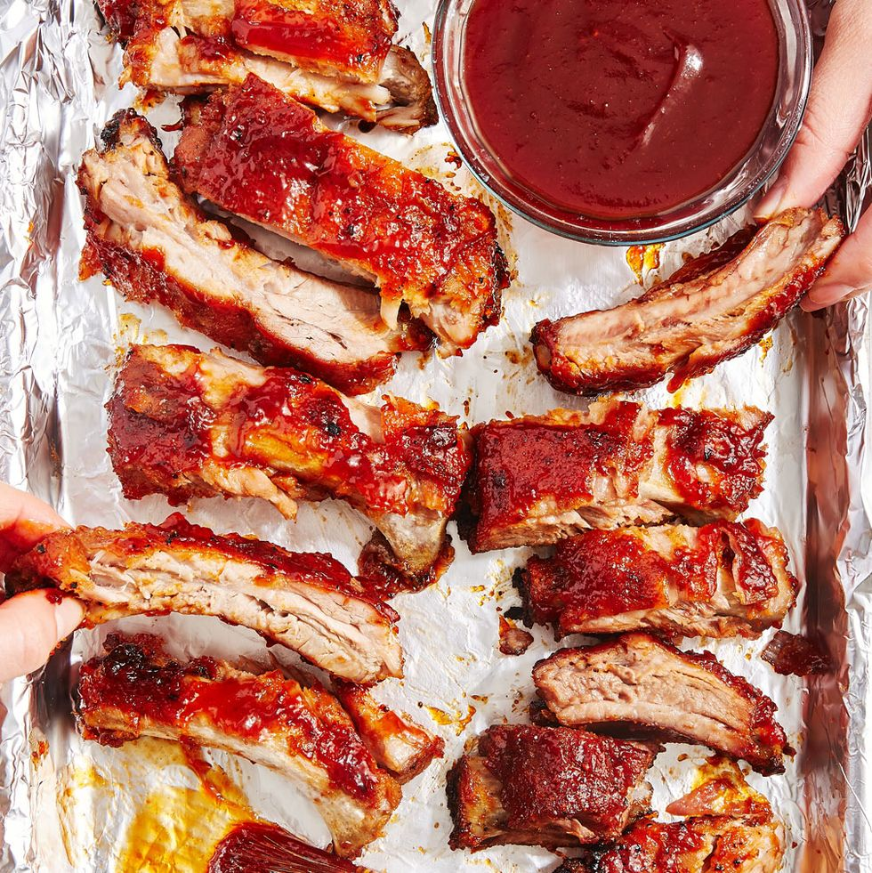

Oven-Baked Ribs

Description
Let’s set the scene: You've got an intense craving for saucy,
tender ribs, but don't have access to a grill. Heartbreaking, we know,
but that's where these BBQ oven-baked ribs come in to save the day. Now,
you can make tender, fall-of-the-bone ribs in the comfort of your own kitchen,
no matter the time of year or your living situation.
Ingredients
FOR THE RIBS
- 2 lb. baby back ribs
- 1/2 c. packed brown sugar
- 2 tsp. kosher salt
- 1 tbsp. garlic powder
- 1/2 tsp. freshly ground black pepper
- 1/2 tsp. paprika
- 1/2 tsp. ground mustard
- 1/4 tsp. cayenne
FOR THE BARBECUE SAUCE
- 1 1/2 c. ketchup
- 1 c. packed brown sugar
- 1/2 c. water
- 1/4 c. apple cider vinegar
- 1 tbsp. Worcestershire sauce
- 1 tbsp. molasses
- 1 tsp. kosher salt
- 1/2 tsp. garlic powder
- 1/2 tsp. onion powder
- 1/4 tsp. ground mustard
- 1/4 tsp. paprika
Steps
- Preheat oven to 300° and line a baking sheet with aluminum foil.
If your ribs have a thin membrane over the bones on the backside,
remove by carefully sliding a knife under membrane and then peel it away.
- In a small bowl stir together brown sugar,
salt, garlic powder, pepper, paprika, mustard powder,
and cayenne. Rub mixture all over ribs and place
on prepared baking sheet. Cover with foil and bake
until very tender, 2 hours.
- Meanwhile make barbecue sauce: In a medium saucepan
over medium heat, combine all sauce ingredients together.
Bring to a boil, then reduce heat and let simmer, stirring
occasionally, until thickened, 1 hour.
- Turn oven to broil. Remove foil from ribs and
brush both sides with barbecue sauce. Broil until sauce
just starts to caramelize, 2 to 4 minutes.
Home